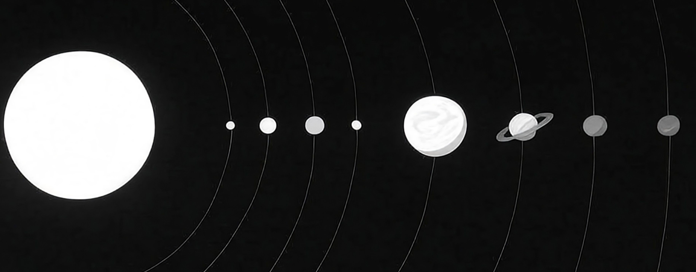
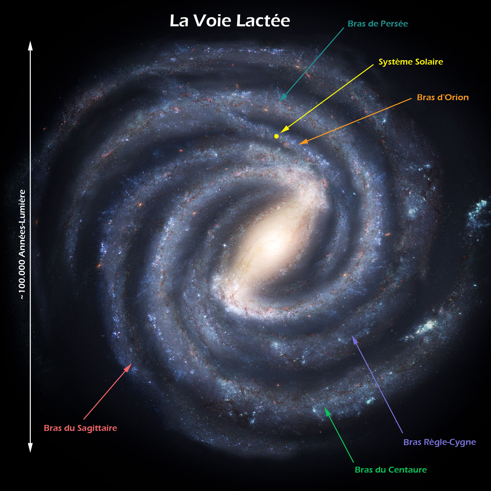
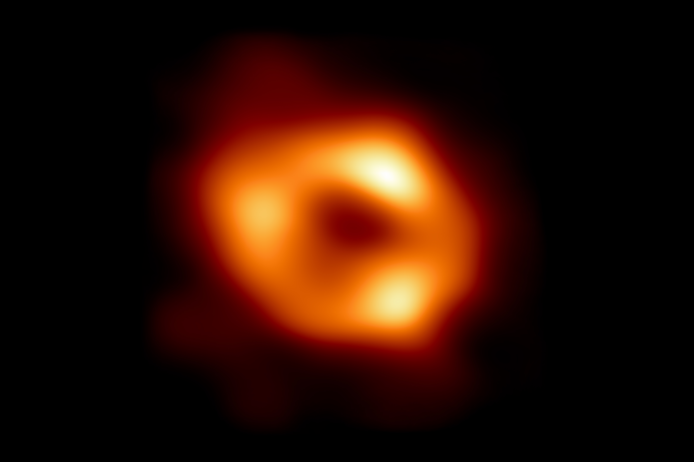
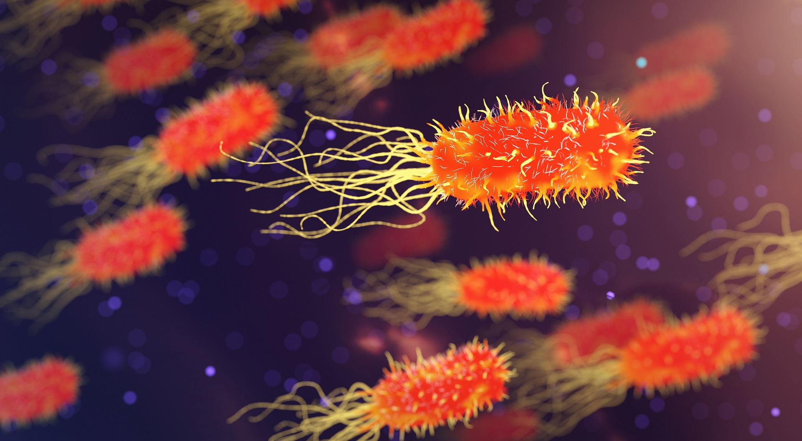
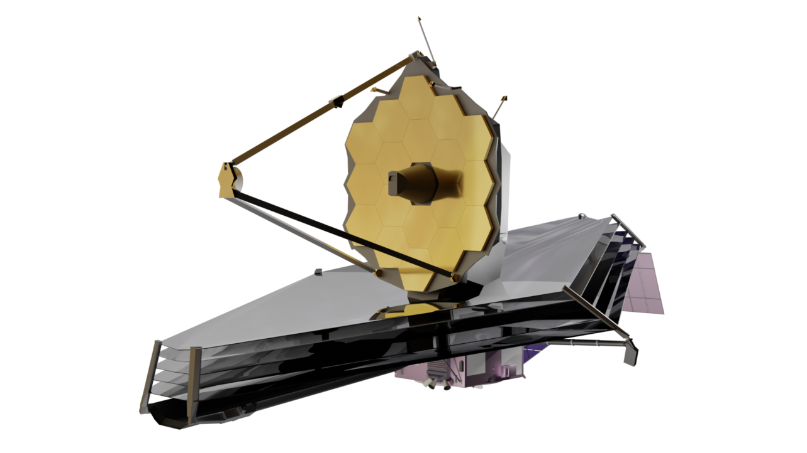
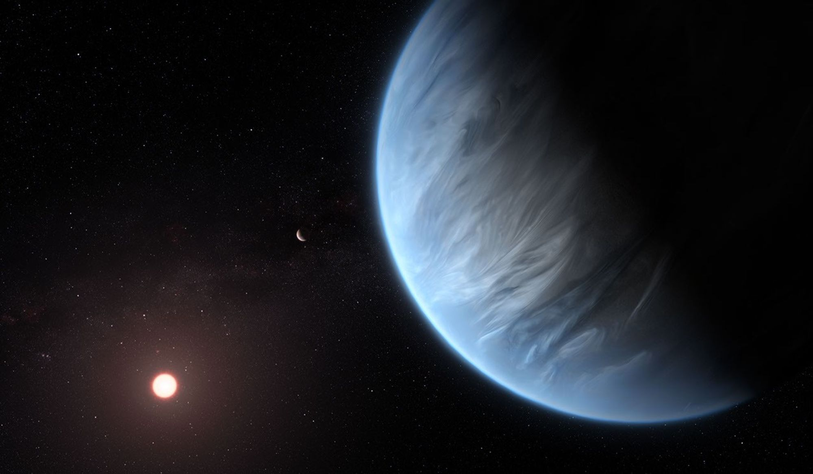

L'astronomie !
Le système solaire : Mercure - Venus - Terre - Mars - Jupiter - Saturne - Uranus - Neptune

Un moyen simple de comprendre :
Me voilà, tardivement mesurée, je
suis une naine.
Et après le système solaire, il y’a quoi ?
La Voie lactée est une galaxie qui a entre 200 et 400 milliards d’étoiles.
Elle abrite le Système solaire et donc la Terre.
| Nom | La Voie Lactée |
| Âge | ~ 13,6 milliards d'années |
| Taille | 120'00 UA* |

Cartographie du CosmosEt dans La Voie Lactée ?
Il y’a un trou noir qui s’appelle Sagittarius A* « Sagittarius A étoile » au plein millieu de La Voie Lactée.
| Nom | sagittarius a* |
| Distance | 26’000 UA* |
| Masse | 4,3 millions de soleils |
| Type | trou noir supermassif |

Sagittarius A* | wikipédiaLe plus gros sujet de l’astronomie
Sommes-nous seuls dans l’Univers ?
Exoplanète K2-18b: quid des indices de vie détectés? | 24 heuresLe 17 avril 2025, des astronautes UK ont détecté composés organiques dans l'atmosphère de *l'exoplanète K2-18b qui sont sur Terre associées à l'activité microbienne sur Terre.

En utilisant le télescope spatial James Webb, ils ont identifié la présence de sulfure de diméthyle (DMS) et de disulfure de diméthyle (DMDS), des molécules associées à l'activité microbienne sur Terre.

Ces découvertes suggèrent que K2-18b pourrait être un monde "Hycean", c'est-à-dire une planète recouverte d'océans avec une atmosphère riche en hydrogène donc en eau.
